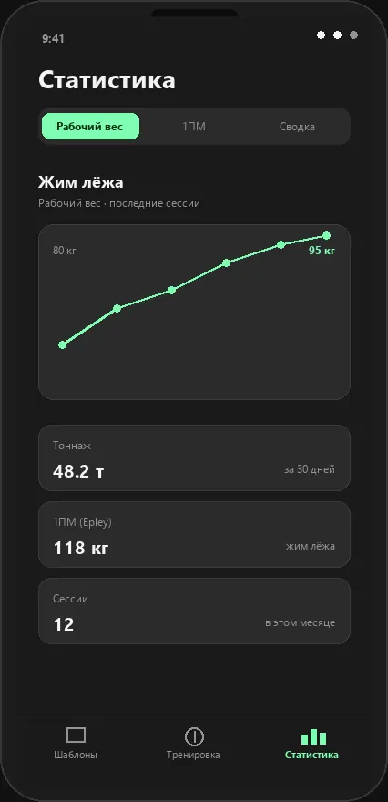

Статистика тренировок и расчёт 1ПМ
Две оси прогресса — объём нагрузки за сессию и сила в конкретном упражнении.

Тоннаж: объём нагрузки за сессию
Тоннаж — сумма «вес × повторения» по всем подходам. Приложение считает его по каждой сессии и за последние 30 дней, поэтому видно, какой день сплита самый тяжёлый и растёт ли объём от недели к неделе. Таблицы в Excel для этого не нужны.
Рабочий вес упражнения
Для выбранного упражнения считается рабочий вес: мода по обычным подходам, то есть вес, который встречался чаще всего. При равенстве берётся больший вес, затем более поздняя запись. Дроп-сеты и читинг в расчёт не попадают и не размывают картину.
Расчёт 1ПМ по формуле Epley
1ПМ — одноповторный максимум, вес, который можно поднять ровно один раз. Проверять его тестом на отказ рискованно, поэтому Lift Log оценивает максимум по рабочим подходам.
Формула расчёта 1ПМ
1ПМ = вес × (1 + повторения / 30). Формула Epley точнее всего работает в диапазоне 3–10 повторений; на сетах по 15–20 раз оценка становится грубой.
Пример: расчёт 1ПМ в жиме лёжа
Рабочий подход — 100 кг на 8 повторений. Подставляем: 100 × (1 + 8 / 30) ≈ 126,7 кг. От этого значения удобно планировать проценты: 75% — около 95 кг для работы на 8–10 повторов, 85% — около 108 кг для тяжёлых сетов на 4–5.
Как читать графики прогресса
Если тоннаж растёт, а оценка максимума стоит на месте — вы прибавляете объём, но не силу. Если растёт 1ПМ при ровном объёме — нагрузка подобрана удачно. Графики интерактивные и строятся прямо на телефоне, без аккаунта и облака.
См. также FAQ: что такое рабочий вес и 1ПМ.